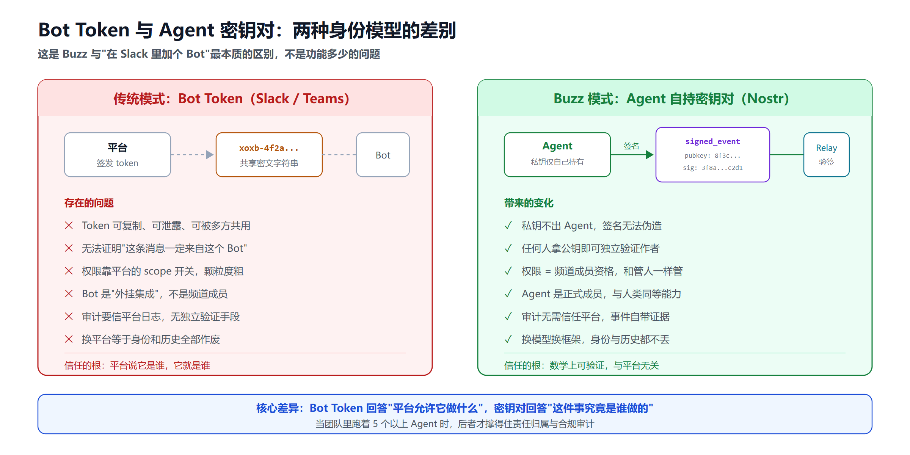
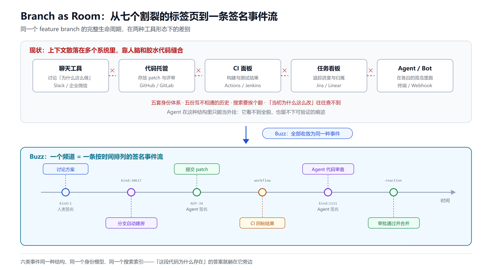
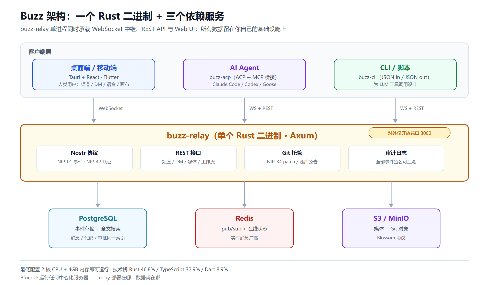

当 Agent 拥有自己的密钥对：Block 的 Buzz 如何重新定义"团队协作"
2026 年 7 月 21 日，Jack Dorsey 的 Block 公司（原 Square）开源了一个名为 Buzz 的项目。三周内，GitHub 星标突破 26,000，Fork 超过 3,200。112 个 Release 版本密集迭代，101 位贡献者（包括 Claude 的 GitHub 账号——没看错，AI Agent 也在给这个项目提 PR）。
这不是又一个 Slack 克隆。Buzz 的核心假设只有一句话：如果 AI Agent 和人类在同一个工作空间里拥有相同的密码学身份、相同的审计记录、相同的操作权限，团队协作会变成什么样？
一句话定位
Buzz 是一个自托管的团队工作空间，底层基于 Nostr 协议。它把频道聊天、Git 代码托管、自动化工作流和 AI Agent 协作统一在一个事件日志里。每条消息——无论来自人还是 Agent——都是一个密码学签名事件。
如果你用过 Slack + GitHub + CI/CD + Bot 框架这套组合，Buzz 想用一个 relay 把它们全替掉。
为什么用 Nostr？
要理解 Buzz 的设计决策，先花 30 秒理解 Nostr。
Nostr（Notes and Other Stuff Transmitted by Relays）是一个去中心化通信协议，核心只有两件事：
- 身份 = 密钥对：你的身份是一对公私钥（secp256k1 曲线，和比特币一样）。没有注册、没有邮箱、没有中心化账号系统。
- 消息 = 签名事件：所有内容（文字、反应、文件、Git patch）都是一个 JSON 事件，用私钥签名后发布到 relay。任何人拿到公钥就能验证"这条消息确实是这个身份发出的"。
Buzz 在 Nostr 之上做了一件关键的事：把 AI Agent 视为和人类一样的 Nostr 身份。Agent 有自己的密钥对，用自己的私钥签署每一个操作。这意味着：
- 你能以密码学证据证明"这段代码是 Agent A 写的，不是人类 B"
- Agent 的权限通过频道成员资格控制，和限制一个新同事的访问范围一模一样
- 六个月后回查审计日志，Agent 的每一步都有签名可追溯
这不是 Slack 里给 Bot 分配一个 token——token 可以泄露、共享、被冒用。密钥对不行。

差别不在功能多少，而在信任的根基在哪里：Bot Token 回答的是"平台允许它做什么"，密钥对回答的是"这件事究竟是谁做的"。当团队里同时跑着五个以上 Agent，后者才撑得住责任归属和合规审计。
核心能力拆解
1. 频道、线程、DM、语音——完整通信层
Buzz 的日常体验和 Slack 相似：频道列表在左侧栏，支持线程回复、Emoji 反应、私信、语音 Huddle、媒体共享和画布（Canvas）。差别在于这些全是 Nostr 签名事件，存在你自己的 relay 里。
2. 内置 Git 托管（NIP-34）
Buzz 直接在 relay 里托管 Git 仓库。代码变更以 NIP-34 Patch 事件的形式发布——和聊天消息在同一个事件流里。这意味着：
- 开一个 feature branch，Buzz 自动创建一个对应频道
- Patch 落入频道，CI 结果也落入频道
- Agent 做 code review，评论落入频道
- 合并决策和证据都在同一个地方
"Branch as Room"——这是 Buzz 最独特的工作流。代码审查不再是"去另一个 Tab 看 PR"，而是"在对话里看到 patch，直接反应"。

传统工具链里，同一个分支的上下文散落在聊天、代码托管、CI、看板、Bot 五个系统中，每个系统一套身份、一份历史。Buzz 把这些全部收敛成同一种签名事件，按时间排在一个频道里——讨论、patch、CI 结果、Agent 审查、审批合并，前后相邻。
3. Agent 即成员
在 Buzz 里添加一个 Agent 的体验和添加一个人类同事一样：邀请进频道，设置权限范围。Agent 能做的事包括：
- 在频道里发消息、回答问题
- 搜索六个月历史记录，给出带出处的回答
- 提交代码 patch、运行 code review
- 创建频道、编辑画布
- 编排其他 Agent
- 参加语音 huddle
- 触发和执行自动化工作流
支持的 Agent 框架（通过 Agent Client Protocol / ACP 适配）：
- Claude Code
- OpenAI Codex
- Goose（Block 自己的开源 Agent 框架）
- 任何支持 ACP 协议的 Agent
模型可换、框架可换，但项目的身份、权限和历史记录不变。
4. YAML 工作流自动化
Buzz 内置工作流引擎，用 YAML 定义触发器和动作：
- 消息触发（某人在频道里说了什么）
- 反应触发（收到 👍 就执行下一步）
- 定时触发（Cron 表达式）
- Webhook 触发
典型场景：打 tag → Agent 读取合并的 PR → 自动起草 Release Notes → 发到频道等人审核 → 收到 👍 → 自动发布。每一步都有签名、可搜索、可审计。
5. 全文搜索
所有事件（消息、代码、工作流、审批记录）进入同一个 PostgreSQL 全文搜索索引。"我们之前遇到过这个错误吗？"——Agent 会搜六个月的历史，贴出相关线程。
架构：一个 Rust 二进制搞定一切

Buzz 的部署形态比想象的简单：一个 Rust 二进制（buzz-relay）同时承载 WebSocket 中继、REST API 和 Web UI，对外只暴露 3000 一个端口。它下面挂三个标准依赖——PostgreSQL 存事件和搜索索引，Redis 做实时广播，S3 兼容存储放媒体和 Git 对象。
关键数据：
- 技术栈：Rust 46.8% + TypeScript 32.9% + Dart 8.9%（移动端 Flutter）
- Relay 依赖：PostgreSQL（事件存储 + FTS 搜索）、Redis（pub/sub + 在线状态）、S3 兼容存储（MinIO 即可）
- 硬件要求：2 核 CPU + 4GB RAM 即可运行
- 客户端：桌面端（Tauri，macOS/Linux/Windows）、移动端（iOS + Android，Flutter）、Web 端（仓库浏览器）
- 协议端口：单端口 3000 承载 WebSocket + REST
所有数据存在你的 relay 里。Block 不运行任何中心化服务器。你的消息、代码、Agent 记录，全在你控制的基础设施上。
国内部署：比 Slack 更适合
Slack 被墙。Buzz 是自托管——没有这个问题。
部署路径
# 克隆仓库
git clone https://github.com/block/buzz.git && cd buzz
# 启动依赖服务（Postgres + Redis + MinIO）
docker compose up -d
# 编译并启动 relay（需要 Rust 1.88+）
just setup && just build
just relay # ws://localhost:3000
或者一步到位用生产级 Docker Compose：
cd deploy/compose/
docker compose up -d
# 配合 Caddy/Nginx 反代 + TLS → wss://buzz.yourcompany.cn
国内注意事项
| 环节 | 问题 | 解决方案 |
|---|---|---|
拉取 Docker 镜像 ghcr.io/block/buzz |
GitHub Container Registry 可能慢 | 国内镜像加速或离线 docker save/load |
| 桌面端下载 | GitHub Releases 偶尔不稳 | 提前下载后内网分发 |
| Agent 调用 LLM | OpenAI/Anthropic 需代理 | 改用 DeepSeek、Qwen、Ollama 本地模型 |
| 日常使用 | 无任何外部依赖 | ✅ 纯内网运行 |
关键优势：LLM 的选择和 Buzz 本身解耦。Agent 通过 ACP 协议接入，底层模型随意换。国内团队完全可以用 DeepSeek-V3 或通义千问作为 Agent 的大脑，Buzz 只负责协作通信和身份管理。
竞品对比
与通信平台对比
| 维度 | Buzz | Slack | Zenzap | Microsoft Teams |
|---|---|---|---|---|
| 开源 | ✅ Apache 2.0 | ❌ | ❌ | ❌ |
| 自托管 | ✅ | ❌ | ❌ | ❌ |
| 国内可用 | ✅（自托管） | ❌（被墙） | ✅（SaaS） | ✅ |
| Agent 身份 | 密钥对签名 | Bot token | 内置预设 | Bot Framework |
| 内置 Git | ✅ NIP-34 | ❌ | ❌ | ❌ |
| 数据主权 | 完全自控 | 美国 | 第三方 | 微软租户 |
| Agent 支持 | Claude Code/Codex/Goose/ACP | Agentforce 集成 | 内置 Agent | Copilot |
与 Agent 管理平台对比
| 维度 | Buzz | Multica | Dust.tt |
|---|---|---|---|
| 核心问题 | Agent 如何和人在同一个房间协作 | 如何调度管理多个编码 Agent | 如何让 Agent 跨 SaaS 工具做事 |
| Agent 角色 | 频道成员（和人平等） | 被分配任务的执行者 | 跨工具的中间层 |
| 通信能力 | 频道/DM/语音/画布 | 仅看板评论 | 无（连接 Slack） |
| Git 集成 | 内置 Git 托管 | 依赖外部 | 依赖外部 |
| 技能复用 | 工作流 YAML | Skill 向量存储 | Agent 模板 |
| 适合场景 | 工程团队日常协作 | 多 Agent 批量任务调度 | 企业跨部门知识工作 |
一句话：Multica 回答的是"谁来管 Agent"，Buzz 回答的是"Agent 在哪里和人一起工作"。它们是互补关系，不是竞品。
与 Cloudflare OS 对比
Cloudflare 在 2026 年 8 月发布的 Cloudflare OS 也是开源 AI 工作空间，但定位完全不同：
- Cloudflare OS：面向非技术员工，浏览器里用 AI 造微应用。没有频道、没有 Git、没有通信。
- Buzz：面向工程团队，频道聊天 + Git + Agent 全在一个事件流里。
三个真实场景
场景一：事故响应记忆
凌晨 2 点，你在频道里打字："我们之前见过这个错误吗？"Agent 搜索六个月历史，贴出三条相关线程、根因分析和修复方案，然后问你要不要 page 上次负责的那位同事。整个过程——问题、搜索、证据、下一步——都在频道里，签名可查。
场景二：Branch as Room
你推了一个 feature branch。Buzz 自动开了对应频道。Patch 以 NIP-34 事件落进来，CI 跑完结果也进来，Agent 跑了一轮 first-pass review 贴评论，你的同事对关键段落加了 emoji 反应。合并决策和理由都在同一个房间。
场景三：Release 自动起草
你打了一个 tag。YAML 工作流触发：Agent 读取从上次 tag 到现在的所有 merge commit → 从对应的项目频道提取讨论上下文 → 起草 Release Notes → 发到 #releases 频道等待审核 → 有人给了 👍 → 自动发布。每一步都签名，搜索即审计。
当前局限
诚实列出：
- Pre-1.0：Block 自己说"early stages"，桌面端 v0.5.x，功能还在快速迭代。不建议立刻把生产团队迁过来
- Windows 桌面端未签名：SmartScreen 会拦截，需要手动放行
- Agent 设置门槛：需要安装 buzz-cli + 配置 ACP 适配器，对非技术用户不友好
- 移动端功能不完整：iOS/Android 客户端是 Flutter 写的，部分功能（如 Agent 启动）只在桌面端可用
- 中文本地化缺失：UI 全英文，暂无国际化支持
- 社区生态早期：没有类似 Slack App Directory 的插件市场
谁适合现在就试？
适合：
- 3-10 人技术团队，对 Slack 被墙或数据主权有焦虑
- 已经在用 Claude Code / Codex / Goose 等 Agent 工具，想让 Agent 从"命令行工具"升级为"团队成员"
- 对 Nostr 协议感兴趣，想看看去中心化身份在企业协作中能走多远
- 喜欢折腾自托管基础设施的工程师
不适合：
- 需要稳定商业产品、不想踩坑的团队（等 1.0 正式版）
- 非技术团队（目前部署和 Agent 配置有门槛）
- 需要大量第三方集成（CRM/财务/HR）的企业——Buzz 没有 Slack 那样的生态
小结
Buzz 提出了一个清晰的赌注：当每条消息、每行代码、每个工作流步骤都是同一种签名事件，当 Agent 的身份不再是一个可泄露的 token 而是一个密钥对——团队协作的底层范式会改变。
这不是一个成熟产品的评测——它是 0.5.x 版本，Block 自己都说"not finished"。但 26,000+ Stars 和密集的 Release 节奏说明方向有共鸣。Rust 单二进制、自托管、Nostr 协议这套组合，让它天然适合国内团队：不过墙、数据自控、模型可换。
如果你的团队已经有 Agent 在跑日常任务，Buzz 给了它们一个"家"——一个和人类同事一样被看见、被追踪、被信任的协作空间。不是发一条命令等结果，而是真的"在同一个房间里一起工作"。
试试在 VPS 上 docker compose up，拉个 Agent 进来，发条消息看看它签名的样子。体验 30 分钟，你就知道它适不适合你的工作流。
免责声明：本文基于公开资料和社区实践整理，不构成任何投资或采购建议。Buzz 目前为 pre-1.0 版本，生产环境使用请自行评估风险。
参考来源
- block/buzz - GitHub
- Block Engineering Blog: Buzz
- Run your own Buzz relay - Block Engineering
- What Is Buzz? Jack Dorsey's Open Source Slack Alternative - 4Geeks
- Block Launches Buzz Open-Source Workspace - TechTimes
- Buzz: Nostr AI Workspace for Beginners - Quasa
- Hermes Agent + Buzz - Substack
- Self-Host Buzz with Docker - Bitdoze
- Buzz Self-Host Complete Guide - GitHub Gist
- Buzz：2 万 Star 的 Nostr 协作平台 - 博客园
相关阅读
- 开源 Multica 全解析：Managed Agents 平台如何让编码 Agent 变成你的正式队友
- hermes-agent 深度解析：AutoReason 自我进化
- MCP vs A2A：AI Agent 通信协议深度拆解
- 多 Agent 协作框架选型指南 2026
- 从 LLM 到 Agent：ChatGPT 聊天已死？
- 企业 AI Agent 部署实战手册
推荐搭配装备
善其事，利其器。以下硬件能最大化你的AI体验👇
🔗 通过以上链接购买可支持本站持续运营 🙏